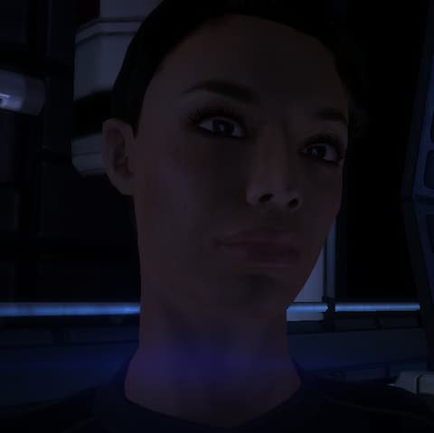

Ashley Williams
Lugar de origen: La Tierra Raza: HumanaLa jefa de artillería Ashley Williams es una oficial de la Alianza de Sistemas. Nacida en 2158 en el seno de una familia militar, se enlistó nada más cumplir la edad necesaria. Sus éxitos la llevaron a formar parte de un pelotón en la colonia humana Eden Prime, donde se enfrentó a la invasión geth. Fue la única superviviente.